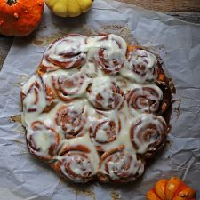

ROLLOS DE CANELA Y ZAPALLO
Ingredientes
Para el queque
- 1/4 taza de agua tibia
- 2 cucharaditas de levadura seca (7 grs)
- 1 cucharadita de azúcar granulada
- 1 taza de puré de zapallo
- 1/4 taza de azúcar granulada (50 grs)
- 1 huevo
- 2 cucharadas de mantequilla derritada
- 3 tazas de harina para todo uso (420 grs)
- 1 cucharadita de canela en polvo
- 1/2 cucharadita de sal
Para el relleno
- 3 cucharadas de mantequilla derritada
- 1 taza de azúcar granulada (200 grs)
- 3 cucharaditas de canela en polvo
- 50 grs de queso crema
- 2 cucharadas de leche líquida
Preparacion
- Mezclar el agua, levadura y 1 cucharadita de azúcar. Dejar reposar 10 minutos.
- En un bowl o mezcladora colocar el zapallo, huevo, mantequilla derritada y la levadura.
- Formar una masa firma y uniforme.
- Una vez lista estirar la masa con un uslero, de forma rectangular por unos 40 cms de largo por 30 cms de ancho.
- Luego poco a poco la mezcla de harina en conjunto con la leche
- Pincelar la sobre la masa con la mantequilla y esparcir el azúcar con canela.
- Comenzar enrollar la masa con cuidado y cortar unas 12 a 14 porciones.Colocar los rollos sobre una bandeja cubierta con papel de mantequilla.
- Unir todo muy bien y colocar esta mezcla en molde idealmente con un hueco en el centro de unos 20 cms de diámetro.